iPhone
Track plans
Plan your training day at home. Draw the tracks on the map, group them and see at once if any of them cross.

Trax records the track while you lay it, tells you when your dog is getting close to an item, and shows you afterwards how well your dog held the track.


$11.99, once. No subscription, no account, no ads.
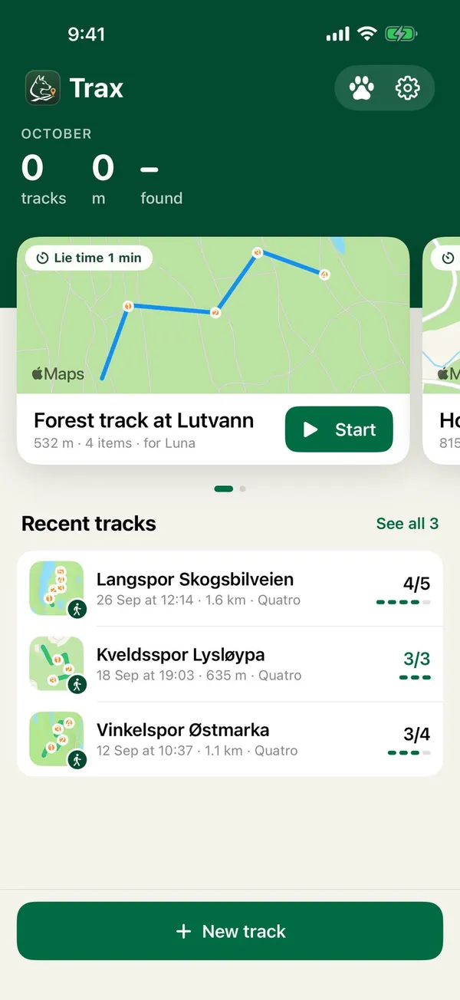
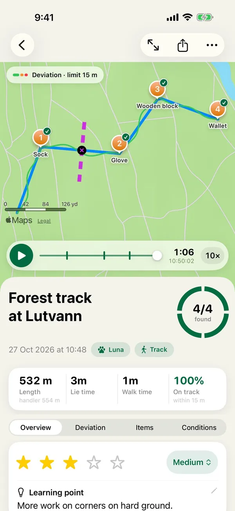
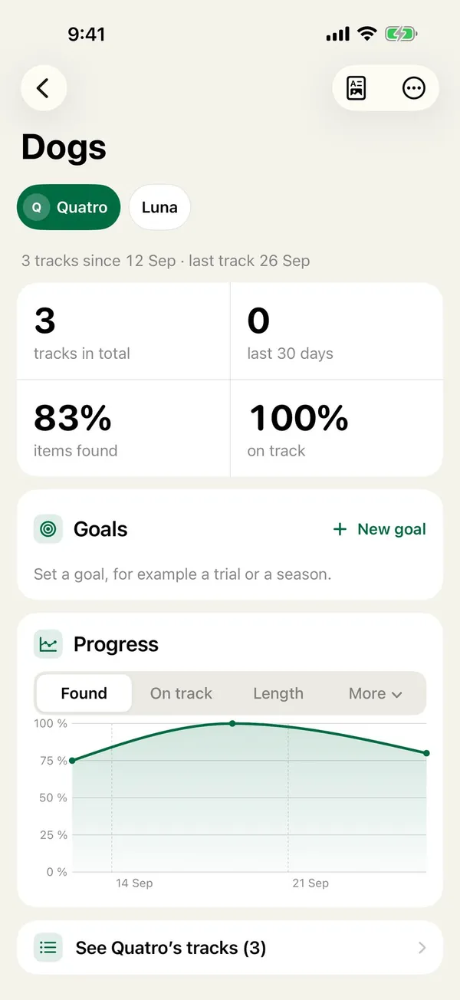
How it works
Draw legs and items on the map at home, and send the plan to the track layer.
Tap “Item” where you drop something. Trax records the route with GPS, counts the track age and alerts you when the track is ready.
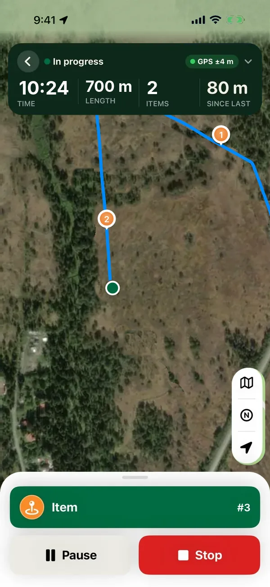
Keep your phone in your pocket. You hear it when you get close to an item, and the phone vibrates if you leave the track.
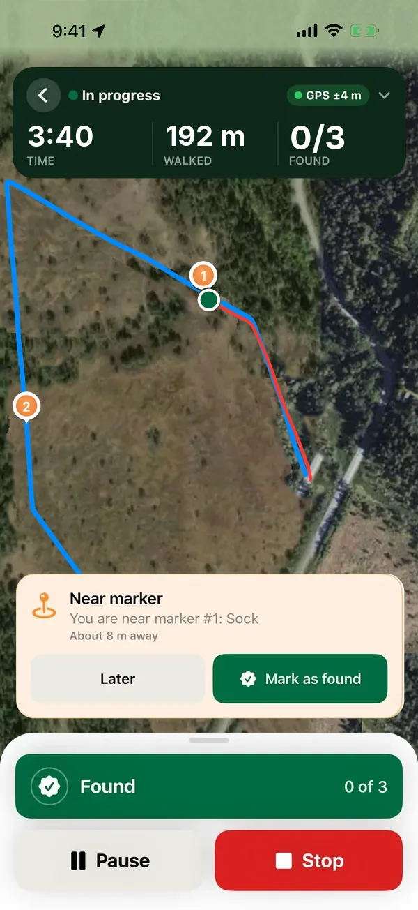
Play the track back, see the deviation along the route and how many items your dog found. Over time you see the progress of each dog.
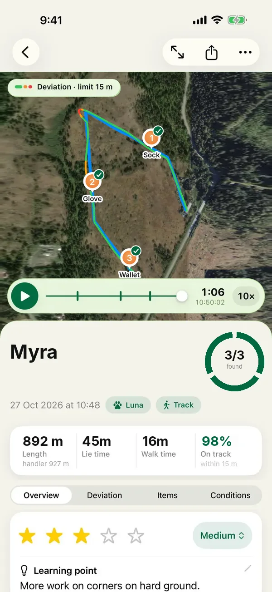
Features
Tracks, IGP tracks, blood tracks, article search and area search in the same app.
Plan your training day at home. Draw the tracks on the map, group them and see at once if any of them cross.
Playback, deviation, items and conditions in one place.
Levels from IGP-V to FH 3, a template on the map and steps against the requirement.
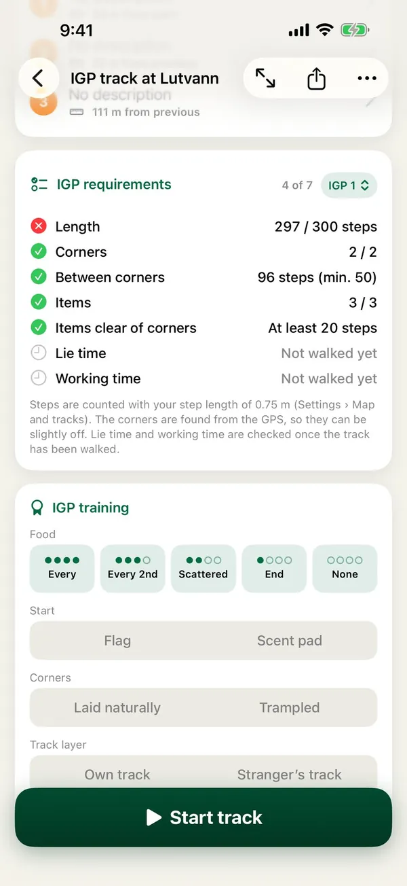
Wound beds, more blood, game and flight direction.
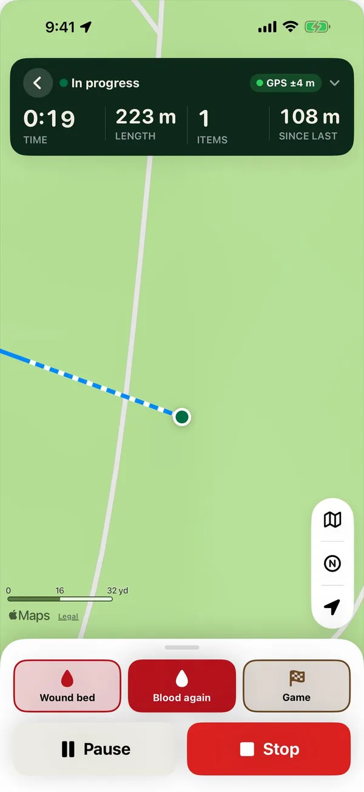
Draw the field, set a time limit and see the time for each find.
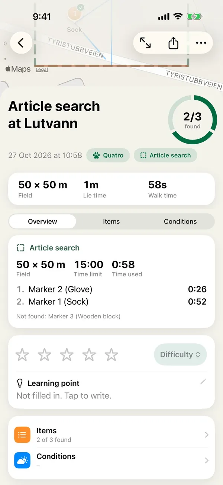
Key figures, goals, training elements and the progress of each dog.
Red light on the screen when you train in the dark.
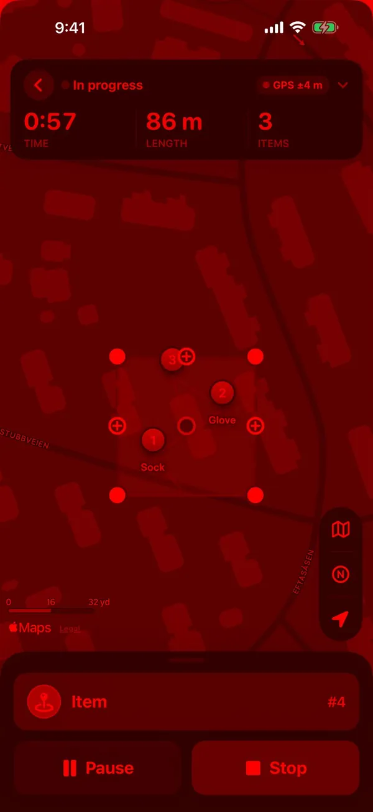
Made by someone who trains tracking
“I train dogs almost every day, and tracking is one of my favourite things to do.”
I made Trax because I wanted a simple app that does exactly what tracking work needs. I use it myself when I train tracking with my dog, and I keep improving the app so it covers every need. I answer every message myself.
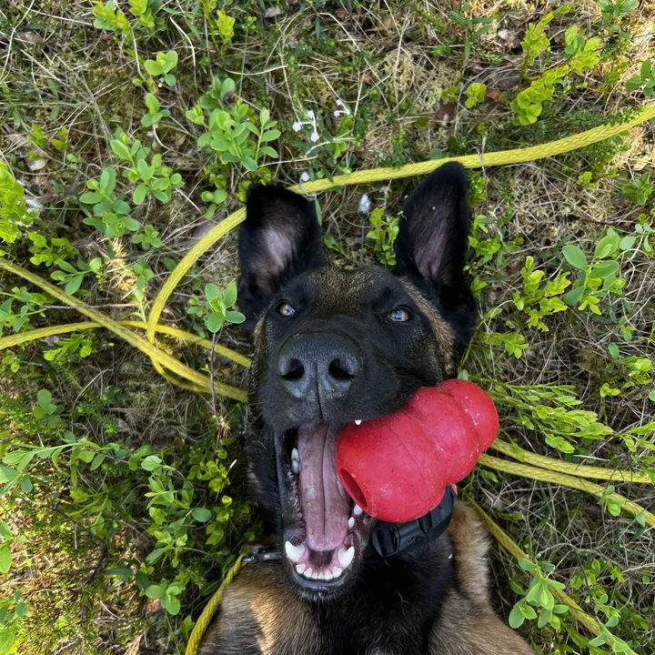
Price
$11.99
I answer every message myself, usually within two working days.